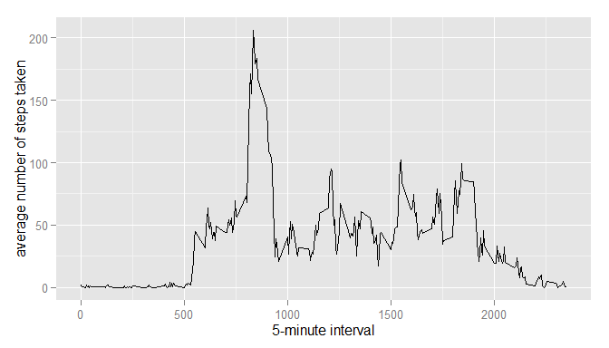
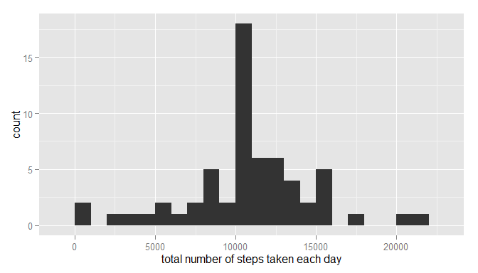

unzip(zipfile = "activity.zip")
data <- read.csv("activity.csv")library(ggplot2)
total.steps <- tapply(data$steps, data$date, FUN = sum, na.rm = TRUE)
qplot(total.steps, binwidth = 1000, xlab = "total number of steps taken each day")mean(total.steps, na.rm = TRUE)## [1] 9354.23median(total.steps, na.rm = TRUE)## [1] 10395library(ggplot2)
averages <- aggregate(x = list(steps = data$steps), by = list(interval = data$interval),
FUN = mean, na.rm = TRUE)
ggplot(data = averages, aes(x = interval, y = steps)) + geom_line() + xlab("5-minute interval") +
ylab("average number of steps taken")
averages[which.max(averages$steps), ]## interval steps
## 104 835 206.1698There are many days/intervals where there are missing values (coded as NA). The presence of missing days may introduce bias into some calculations or summaries of the data.
missing <- is.na(data$steps)
missing <- is.na(data$steps)
# How many missing
table(missing)## missing
## FALSE TRUE
## 15264 2304All of the missing values are filled in with mean value for that 5-minute interval.
# Replace each missing value with the mean value of its 5-minute interval
fill.value <- function(steps, interval) {
filled <- NA
if (!is.na(steps))
filled <- c(steps) else filled <- (averages[averages$interval == interval, "steps"])
return(filled)
}
filled.data <- data
filled.data$steps <- mapply(fill.value, filled.data$steps, filled.data$interval)Now, using the filled data set, let’s make a histogram of the total number of steps taken each day and calculate the mean and median total number of steps.
total.steps <- tapply(filled.data$steps, filled.data$date, FUN = sum)
qplot(total.steps, binwidth = 1000, xlab = "total number of steps taken each day")
mean(total.steps)## [1] 10766.19median(total.steps)## [1] 10766.19Mean and median values are higher after imputing missing data. The reason is that in the original data, there are some days with steps values NA for any interval. The total number of steps taken in such days are set to 0s by default. However, after replacing missing steps values with the mean steps of associated interval value, these 0 values are removed from the histogram of total number of steps taken each day.
First, let’s find the day of the week for each measurement in the dataset. In this part, we use the dataset with the filled-in values.
weekday.or.weekend <- function(date) {
day <- weekdays(date)
if (day %in% c("Monday", "Tuesday", "Wednesday", "Thursday", "Friday"))
return("weekday") else if (day %in% c("Saturday", "Sunday"))
return("weekend") else stop("invalid date")
}
filled.data$date <- as.Date(filled.data$date)
filled.data$day <- sapply(filled.data$date, FUN = weekday.or.weekend)Now, let’s make a panel plot containing plots of average number of steps taken on weekdays and weekends.
averages <- aggregate(steps ~ interval + day, data = filled.data, mean)
ggplot(averages, aes(interval, steps)) + geom_line() + facet_grid(day ~ .) +
xlab("5-minute interval") + ylab("Number of steps")